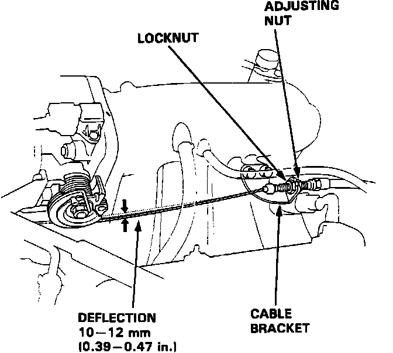

Throttle Cable/Linkage: Testing and Inspection
1. Warm up the engine to normal operating temperature, (the cooling fan comes ON).2. Check that the Throttle Cable operates smoothly with NO binding or sticking. Repair as necessary.
Throttle Cable Adjusting:

4. Check Throttle Cable deflection at the throttle linkage. Throttle Cable deflection should be:
0.39 - 0.47 in. (10mm - 12mm).
5. If deflection is NOT within specs, loosen the locknut and turn the adjusting nut until the deflection is as specified.
6. With the Throttle Cable properly adjusted, check the throttle valve to be sure it opens fully when you push the accelerator pedal to the floor. Also check the throttle valve to be sure it returns to the idle position when the accelerator pedal is released.